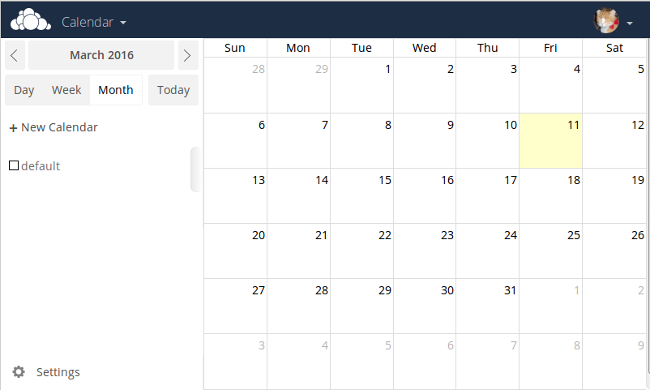
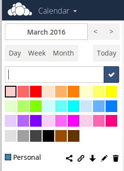
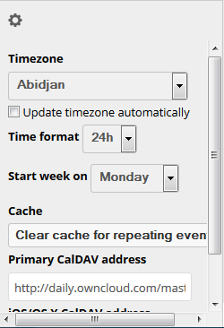
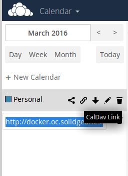
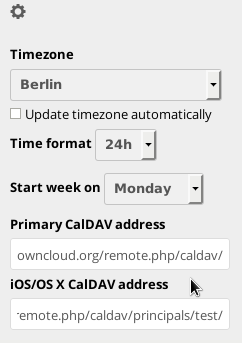
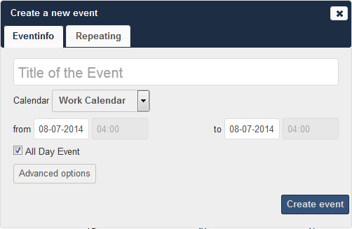
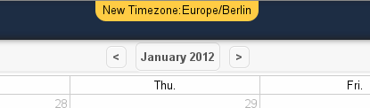

Using the Calendar App¶
The Calendar app is not enabled by default in ownCloud 9.0 and needs to be enabled seperately. It is also not a supported core app. You may ask your ownCloud server admin to enable it, and if you are your own admin consult the Installation > Installing and Managing Apps section of the ownCloud Server Administration Manual.
The ownCloud Calendar app enables you to create and edit events, synchronize to other calendars you might use, and create new, personalized calendars.
By default, when you access the Calendar app for the first time, you get a “Personal” calendar that you can use or modify as you like.

The Calendar app contains the following fields and controls:
Calendar Date Field – Provides the current date or enables you to select a date that you want to view.
Calendar View Options – Enables you to choose between a day, week, or month view for the main Calendar app window. Also provides a quick jump button to access the current day (Today).
Calendar Selection – Enables you to choose the calendar that you want to view.
Calendar Controls – Provides controls for each individual calendar. These controls include sharing, obtaining an external URL link to the calendar, an export function, an edit function, and a delete (trash) button.
Note
Some Ad-Block plugins hide the “Share” button for calendars. If the “Share” button is missing, try disabling your Ad-Block plugin or add a whitelist-entry for your OwnCloud instance.
Calendar Settings – Provides access to the calendar-specific settings. These settings include the calendar timezone selection, time format selection, week start day, cache setting, primary CalDAV address, and iOS/OS X CalDAV address settings.
Creating a New Calendar¶
The ownCloud Calendar app enables you to create new calendars for work or other activities that you want to keep separated. You can manage each calendar separately.
To create a new calendar:
- Access the Calendar app.
- Click the
+ New Calendarfield.
A dialog opens to enable you to create a new calendar.

New calendar
- Specify a name for the new calendar.
- (Optional) Specify a color for the new calendar.
- Click the blue checkbox.
The Calendar app creates a new calendar using the name and color specified.
Managing Calendar Settings¶
The Calendar app settings provides global configuration that applies to all calendars that you have created in the Calendar app.

In the Calendar app settings, you can modify the following:
- Timezone – Provides an alphabetical listing of all available countries categorized by continent.
- Time format – Provides the option of using 24 hour or 12 hour time format.
- Start day – Provides the option of starting the calendar week on Monday, Sunday, or Saturday.
- Primary CalDAV address – Provides the primary CalDAV link URL.
- iOS/OS X CalDAV address – Provides the iOS/OS X CalDAV link URL.
Synchronizing Calendars Using CalDAV¶
Calendaring Extensions to WebDAV, referred to as CalDAV, enables clients to access scheduling information on remote servers. As an extension to WebDAV, CalDAV (defined by RFC 4791) uses the iCalendar format to manage calendar data. CalDAV enables multiple clients to access the same information for use in cooperative planning and information sharing.
The Calendar app provides both the Primary CalDAV address and the iOS/OSX CalDAV address. Using these addresses, you can use CalDAV-compatible programs (for example, Kontact, Evolution, or Mozilla Thunderbird with the Lightning Add-on) using the address provided.
Note
The Lightning Add-on doesn’t support using multiple accounts on a single
server as a default. You need to set calendar.network.multirealm to true
in the Config Editor of Mozilla Thunderbird to be able to use multiple accounts.
Getting the CalDAV link¶
The GUI of ownCloud provides the needed links which can be used in your CalDAV-compatible program. Open up the Calendar App and use the icon next to the calendar name as shown in the figure below:

Furthermore you can get the Primary CalDAV address as well as the iOS/OS X CalDAV address by using the icon on the bottom left of the Calendar app as shown in the figure below:

Creating Events¶
The Calendar app enables you to schedule events, send invitations, and set reminders.
To create a new event:
Click a date in the month view or a time in either the week or day views.
The
Create a new eventdialog box opens.Specify a title for the event.
Specify a date and time duration for the event.
(Optional) Provide advanced option details. These details can include the event location, the event category, and an event description.
(Optional) Make it a repeating event, invite attendees, and set reminders.
Exporting and Importing Events¶
The Calendar app enables you to export and import event or entire calendars to or from other calendars.
Exporting Events and Calendar¶
You can export either a single event or an entire calendar. If you want to export a single event, click on the event, select “Advanced” and press the “Export Event” button in the bottom left corner. If you want to export an entire calendar, use the download icon next to the calendar name.
Importing Events¶
You can import your calendar as an iCal file using the Files app. The Calendar app enables you to import the calendar into a new calendar or into an already existing calendar.
To import your calendar, click the calendar file to open the import dialog.
Special CalDAV URLs¶
Additionally the Calendar app is providing two URLs for special functions:
Export calendar as an .ics file
Your contacts’ birthdays
Calendar App FAQ¶
Question: Why does the Calendar app request my current location?

Timezone set notification
Answer: The calendar needs your current position to detect your timezone. Without the correct timezone, a time offset exists between the events in the ownCloud calendar and the desktop calendar to which you are synchronizing. You can also set the timezone manually in the personal settings.